Префектура Фукусима · Одака · люди и места
Одака: город, который начали заново, и ветчина, которую делают по-старому
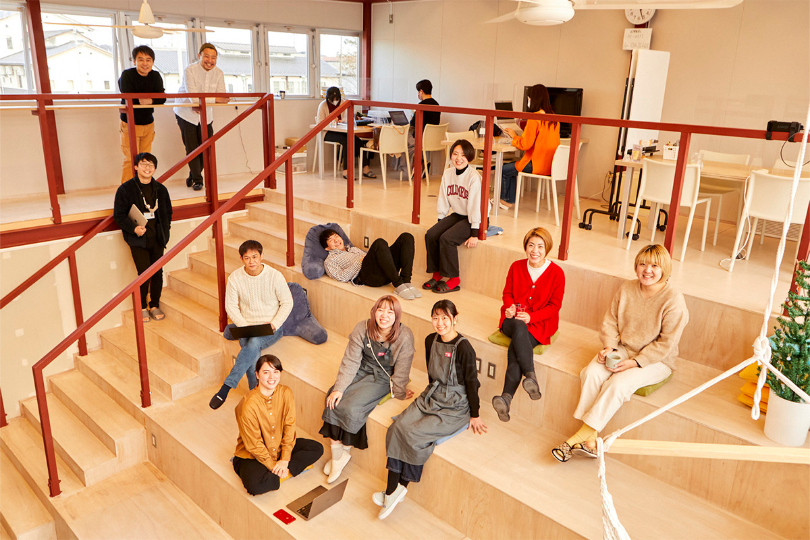
После аварии 2011 года в районе Одака не осталось ни одного жителя. Спустя десятилетие здесь варят крафтовое сакэ, делают стеклянные украшения и по-прежнему коптят ветчину по рецепту конца эпохи Эдо.
Город
Начать с нуля
Одака это район города Минамисома на севере Хамадори, тихоокеанского побережья префектуры Фукусима. После Великого восточно-японского землетрясения 2011 года и аварии на АЭС «Фукусима-1» район объявили зоной эвакуации, и население здесь упало до нуля. Спустя десять лет Одака стал известен другим: новое поколение строит здесь свои маленькие дела.
Одним из тех, кто заложил эту новую жизнь, стал Томоюки Вада. Он основал IT-компанию в Токио, а в 2005 году вернулся на родину и продолжил работать удалённо. После катастрофы, в 2014 году, он создал компанию Odaka Worker's Base, а в 2019 году открыл Odaka Pioneer Village. Его цель звучит так: «из ста задач района сделать сто дел», чтобы местная жизнь не зависела от крупных корпораций.
К этой идее потянулись люди, которых привлекло место, где всё начинается с чистого листа. К 2022 году в Одаке появилось 20 небольших предприятий. И все они называют одно и то же достоинство района: здесь просто хорошо.
«Люди в Одаке вернулись, потому что любят это место, и обиды на него ни у кого нет. К тому же все, пожив в эвакуации, сами побывали чужаками. Поэтому тех, кто приезжает и начинает что-то новое, здесь принимают»
Томоюки Вада
Сообщество получилось деятельным и живым. Сюда можно не только переехать: здесь принимают на вторую работу и на стажировку, так что с местными первопроходцами стоит хотя бы раз познакомиться лично.
Коворкинг
Odaka Pioneer Village: работать и ночевать
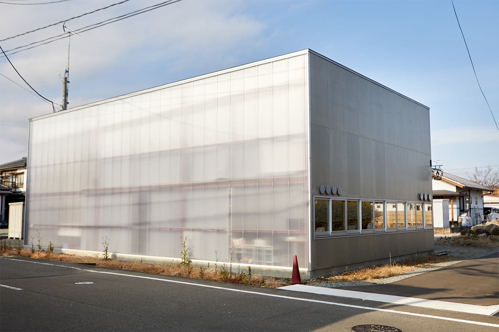
Odaka Pioneer Village это коворкинг, в котором можно и переночевать. Проект архитектора построен на идее «здания с размытыми границами». Внутри столы, ступени-трибуны и простые комнаты для ночлега. Здесь собираются местные жители и переехавшие, придумывают, каким хотят видеть будущее, и обсуждают его.
Odaka Pioneer Village
- Адрес
- префектура Фукусима, Минамисома, Одака, Хоммати, 1-87
- Телефон
- +81 244-26-4665
- Часы работы
- 10:00–18:00
- Выходные
- суббота, воскресенье и праздники (ночлег: выходные нерегулярные)
Дизайн
«Цубуцубу»: дом, где людей связывает творчество
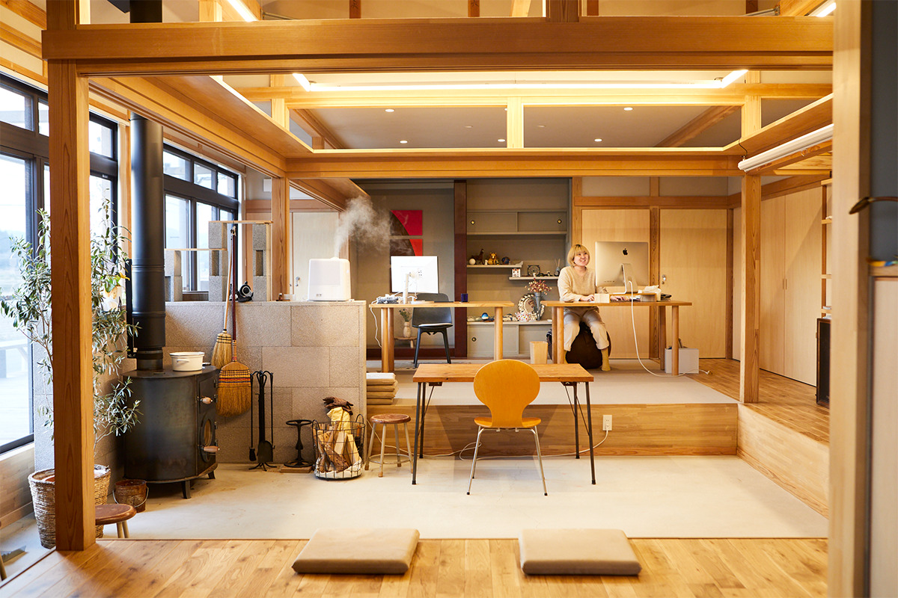
В Токио основательница студии занималась дизайном для музыки, одежды и книг, а потом вернулась в родную префектуру и открыла в Одаке «Цубуцубу». С дизайнерским вопросом сюда может запросто зайти любой житель. При студии работают мастерская-галерея и проходят события, чтобы творчество было рядом с повседневной жизнью.
«Цубуцубу»
- Адрес
- префектура Фукусима, Минамисома, Одака, Мимигай, Омотэ, 6
- Телефон
- +81 50-5850-7573
- Выходные
- нерегулярные
Стекло
iriser: Минамисома в стекле
iriser это собственная марка, выросшая из производственной площадки HARIO, известного производителя жаропрочного стекла. Мастерская устроена так, чтобы в ней удобно было работать женщинам с самым разным укладом жизни. Здесь делают тонкие стеклянные украшения с местными мотивами.
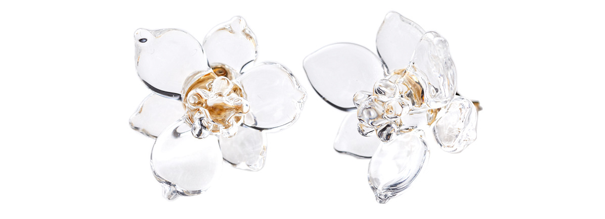
В апреле 2026 года у марки открылся отдельный магазин iriser gallery & shop: кроме украшений там продают работы местных мастеров и рассказывают о районе.
iriser
- Адрес
- префектура Фукусима, Минамисома, Одака, Хоммати, 1-87, в Odaka Pioneer Village
- Телефон
- +81 244-26-4525
- Часы работы
- 10:00–18:00
- Выходные
- суббота, воскресенье и праздники
- Сайт
- iriser.owb.jp
Сакэ
haccoba: сакэ по законам крафтового пива
haccoba называет себя крафтовой сакэварней. Здесь соединяют приёмы японского сакэ и крафтового пива и варят без оглядки на жанры. Основатель приехал в Одаку из другого края. Главный напиток «Ханаута хопс» делают с хмелем, который пахнет цитрусами, а попробовать все сорта можно в баре при сакэварне.
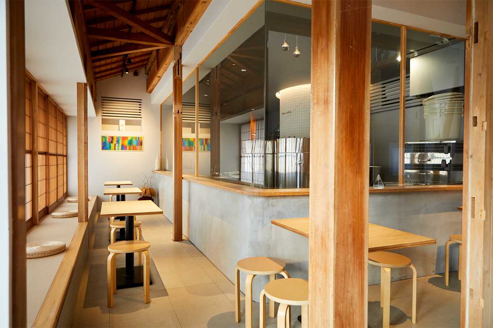
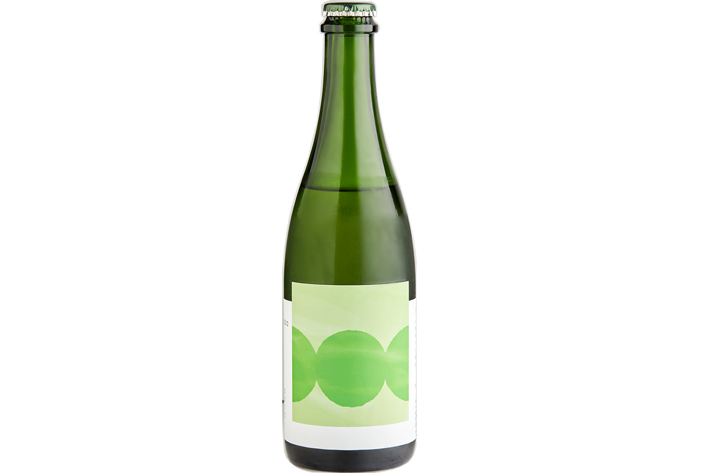
В феврале 2024 года haccoba открыла вторую сакэварню с магазином прямо в здании станции Одака.
haccoba -Craft Sake Brewery-
- Адрес
- префектура Фукусима, Минамисома, Одака, Тамати, 2-50-6
- Часы работы
- продажа 10:00–17:00, бар 17:30–22:30 (последний заказ в 22:00), по предварительной записи
- Выходные
- с понедельника по четверг (продажа: понедельник)
- Сайт
- haccoba.com
IT
Odaka Tech: компьютерщик на весь город
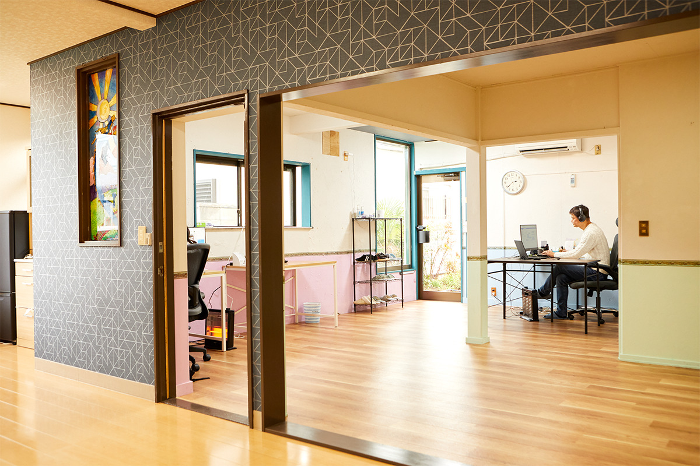
Основатель Odaka Tech работал программистом в Токио, в Индонезии и в других местах. В Одаке он открыл «городскую IT-лавку», которая делает сайты для соседей, а ещё зовёт в район IT-компании и консультирует фирмы из других мест.
Odaka Tech
- Адрес
- префектура Фукусима, Минамисома, Одака, Хоммати, 1-53
- Телефон
- +81 80-7801-0992
- Часы работы
- 9:00–17:00
- Выходные
- суббота, воскресенье и праздники
- Сайт
- odakatech.com
Ветчина
«Фукусо сёкухин когё»: вкус, который не меняют
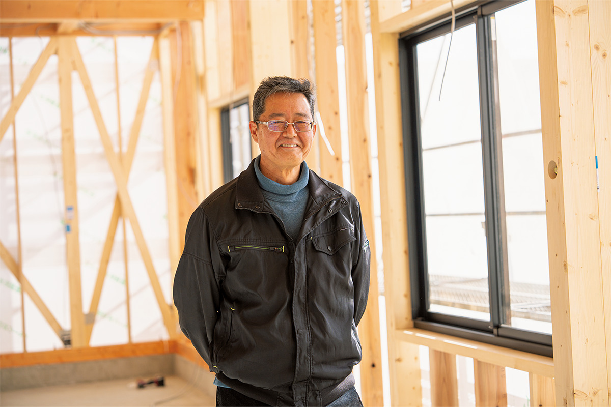
Компания «Фукусо сёкухин когё» делает ветчину и бекон по способу, который передаётся в семье из поколения в поколение. Ветчину в Одаке начали делать в конце эпохи Эдо: её принесли торговцы, ходившие по большой дороге, и местные энтузиасты взялись за дело сами.
«Нашу ветчину приправляют только солью, сахаром и специями. Записей не сохранилось, так что точно сказать нельзя, но, похоже, это испанский способ»
глава пятого поколения «Фукусо сёкухин когё»
Тогдашние мастера подогнали пропорции и технологию под японский вкус, а вместо дичи и китового мяса стали брать свинину. В начале эпохи Сёва (1926–1989) сложился «способ копчения конца эпохи Эдо»: мясо вымачивают в рассоле с приправами, несколько недель выдерживают и коптят на вишнёвой щепе. Работа долгая, поэтому ветчины выходит немного, но способ не меняют до сих пор.
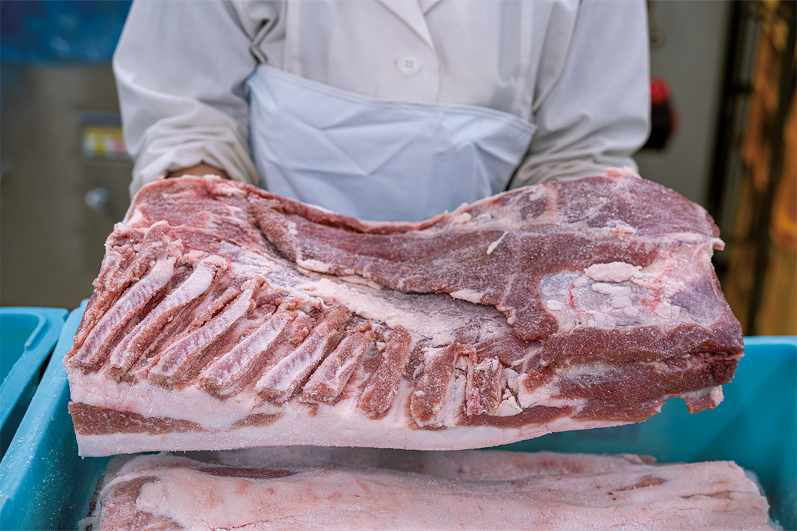
«Если гнаться за выгодой, можно делать больше. Но покупатели за все годы не прислали нам ни одного замечания, даже жалобы. Значит, лучше ничего не трогать»
глава пятого поколения «Фукусо сёкухин когё»
У компании очень много постоянных покупателей. Говорят, мужчины из Одаки, отправляясь знакомиться с родителями невесты, брали в подарок «Одака ветчину». Лучшего доказательства неизменного вкуса не придумать.
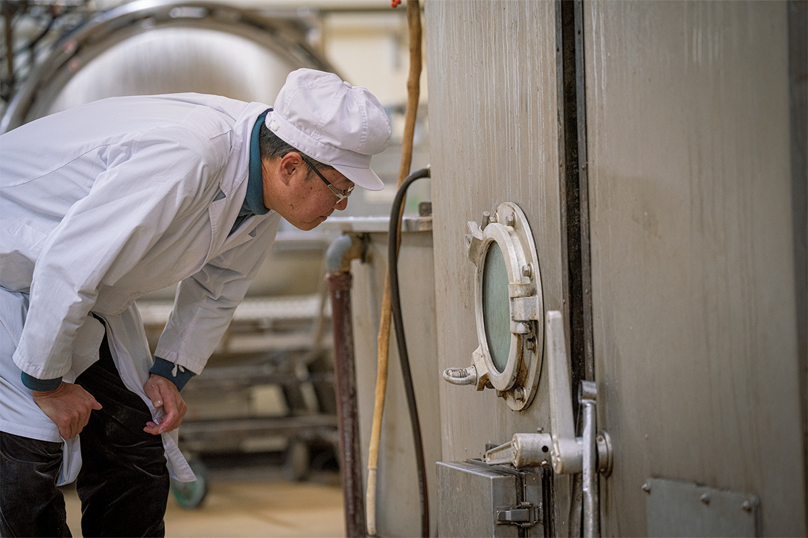
После землетрясения 2011 года производство остановилось, но в том же году компания построила временный цех в соседнем районе Харамати и снова начала работу. В 2016 году, когда в Одаке сняли приказ об эвакуации, она вернулась и восстановила главный завод. Решиться помогли сотрудники, которые твёрдо сказали «давайте сделаем», и покупатели, ждавшие ветчину.
«В Одаке живёт меньше 4000 человек, и многим хозяевам некому передать дело. Но работы здесь много. Мы тоже рады новым людям»
глава пятого поколения «Фукусо сёкухин когё»
Весной 2023 года рядом с заводом строили фирменный магазин, который должен был помогать и путешественникам, и тем, кто думает о переезде. «Без людей ничего не начнётся», говорит глава компании.
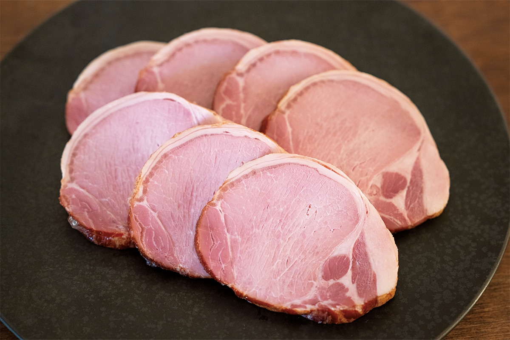
Ветчину продают через интернет, и она входит в подарки за «налог на родину» Минамисомы, так что у города появляются новые друзья.
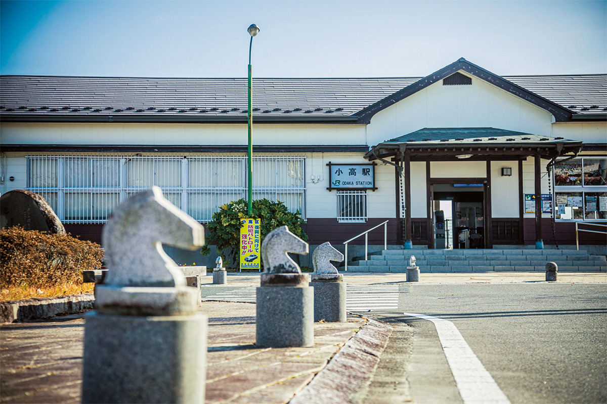
«Фукусо сёкухин когё»
- Адрес
- префектура Фукусима, Минамисома, Одака, Окада, Камикаварада, 112
- Телефон
- +81 244-44-3241
Фото: Кэндзи Окадзаки, Ацуси Ямахира.